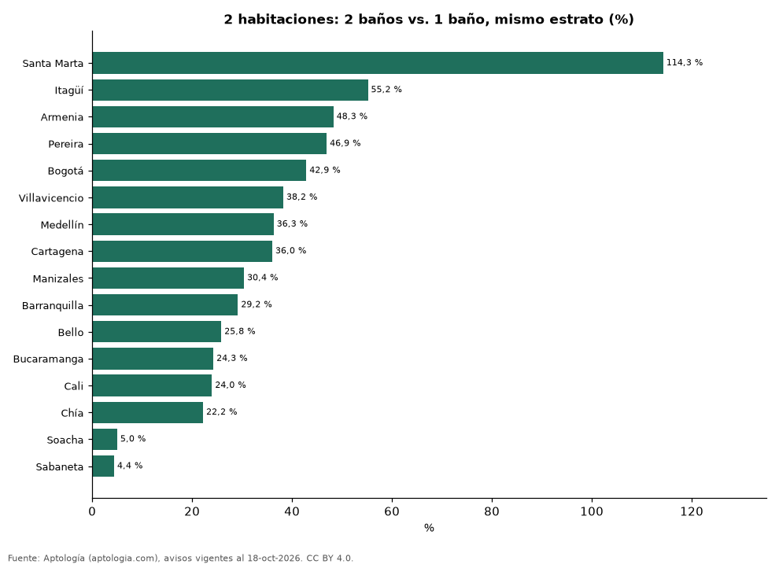

Cuánto vale un segundo baño: precio de apartamentos de 2 habitaciones con 1 y 2 baños en Colombia (octubre 2026)
Estudio con datos abiertos (CC BY 4.0). Versión original: https://github.com/elbroker/aptologia-datos/tree/main/estudios/cuanto-vale-un-bano-extra-ciudades-colombia-2026 · DOI: 10.5281/zenodo.23462191
Un apartamento de 2 habitaciones con 2 baños se pide en Colombia un 37,4 % más caro que uno con 1 baño del mismo estrato y ciudad; la mayor diferencia está en Santa Marta (114,3 %). En Bogotá es 42,9 %. La menor, en Sabaneta (4,4 %). Sin emparejar por estrato la diferencia sería 91,8 %.
Resumen: comparamos 27.076 apartamentos de 2 habitaciones en venta con 1 o 2 baños en 16 ciudades.
Actualizado: 18 de octubre de 2026 (datos del 18 de octubre de 2026) · Próxima actualización: mensual.

Resumen
| Indicador | Valor |
|---|---|
| Colombia | +37,4 % |
| Mayor | Santa Marta: +114,3 % |
| Menor | Sabaneta: +4,4 % |
Ciudades
| Ciudad | 2 baños vs. 1 (mismo estrato) | Combinaciones de estrato | Avisos (2 / 1) |
|---|---|---|---|
| Santa Marta | +114,3 % | 1 | 558 / 36 |
| Itagüí | +55,2 % | 1 | 160 / 33 |
| Armenia | +48,3 % | 3 | 511 / 155 |
| Pereira | +46,9 % | 2 | 474 / 114 |
| Bogotá | +42,9 % | 5 | 3.561 / 2.068 |
| Villavicencio | +38,2 % | 1 | 35 / 33 |
| Medellín | +36,3 % | 3 | 1.626 / 444 |
| Cartagena | +36,0 % | 3 | 1.125 / 134 |
| Manizales | +30,4 % | 2 | 189 / 185 |
| Barranquilla | +29,2 % | 3 | 1.098 / 178 |
| Bello | +25,8 % | 1 | 193 / 92 |
| Bucaramanga | +24,3 % | 1 | 67 / 37 |
| Cali | +24,0 % | 2 | 1.303 / 212 |
| Chía | +22,2 % | 2 | 436 / 105 |
| Soacha | +5,0 % | 1 | 31 / 51 |
| Sabaneta | +4,4 % | 2 | 1.021 / 75 |
Diferencia del precio mediano dentro de cada combinación de ciudad y estrato (30 avisos o más en cada grupo), promediada con peso por avisos. El segundo baño suele venir con más área, así que la cifra incluye ese efecto.
Preguntas frecuentes
¿Cuánto vale un baño extra en un apartamento? En Colombia, un apartamento de 2 habitaciones con 2 baños se pide un 37,4 % más caro que uno con 1.
Metodología
- Fuente: exportes nocturnos de la base de datos de Aptología (aptologia.com) del 18 de octubre de 2026: avisos vigentes de vivienda en portales inmobiliarios de 13 países, recogidos por Aptología y vistos en línea entre el 11 y el 18 de octubre de 2026. Corte: 18 de octubre de 2026.
- Depuración: se eliminan duplicados exactos (misma ciudad, zona, tipo, precio, moneda, área, habitaciones y baños) y los precios fuera del percentil 1–99 de cada país, operación, moneda y tipo; el precio por m² usa solo avisos con área declarada entre 12 y 2.000 m² y también se recorta al P1–P99.
- Qué se mide: precios pedidos (publicados), no precios de cierre. En arriendo, el canon mensual sin administración, gastos comunes ni condominio.
- Muestra mínima: cada cifra publicada se apoya en al menos 30 avisos; las celdas con menos se omiten.
- Colombia: Precios en pesos colombianos, sin conversión de moneda.
- Limitaciones: la cobertura depende de los portales que recorre Aptología en cada país y es mayor en las ciudades grandes y en los segmentos medio-alto y alto; el área es la que declara el aviso, sin verificar; los nombres de zona vienen de los portales.
- Privacidad: solo se publican agregados; no se publica ningún dato personal, enlace a avisos ni nombre de anunciante.
- Datos abiertos: datos.csv, licencia CC BY 4.0.
Cómo citar
Pinzón Pineda, D. M. (2026). Cuánto vale un segundo baño: precio de apartamentos de 2 habitaciones con 1 y 2 baños en Colombia (octubre 2026). Aptología (aptologia.com). https://github.com/elbroker/aptologia-datos/tree/main/estudios/cuanto-vale-un-bano-extra-ciudades-colombia-2026. Datos: datos.csv, licencia CC BY 4.0.